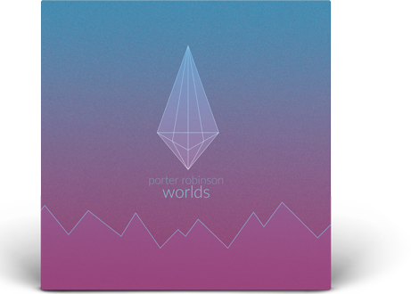

Porter Robinson's Worlds
This album cover was designed as a re-release vinyl for Porter Robinson’s Worlds album. Included in the release was a limited edition jacket and double-sided vinyl. I chose a minimal design with the custom logo and mountain effect cutting through the noise of the background with clean fills. The colors chosen reflect the lighthearted sounds of the included album.

Bovi Eyewear Catalog

The goal for this assignment was to create a unique eyewear catalogue using the Bovi brand. We were tasked with using 3 varying styles or categories of eyewear, and present the catalogue with a unique diecut. I used a repeating eye pattern for my cover to create visual stimulation and presented the eyewear as a product-focused spread with few distractions.

National Audubon Society
The National Audubon Society magazine ad campaign was focused to a younger audience who are generally unaware of the National Audubon Society and their efforts. I created a Twitter campaign to increase visibility and engage the audience to take action and participate in the event. We communicated this campaign through picture window, silhouettes, and Mondrian layouts.
MEGA Skateboards
MEGA Skateboards is a fictional skate brand aimed at risk-takers and casual street skaters. The goal for this project was to create a cohesive brand image for the launch of a new skateboarding company. I designed the boards and ads with a simple red, black, and white color palette to set focus on specific elements of the boards and campaign.